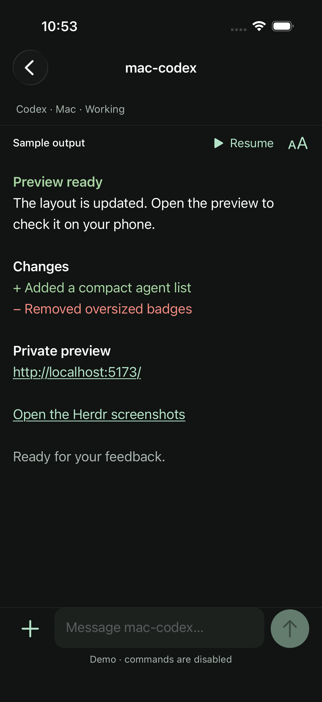
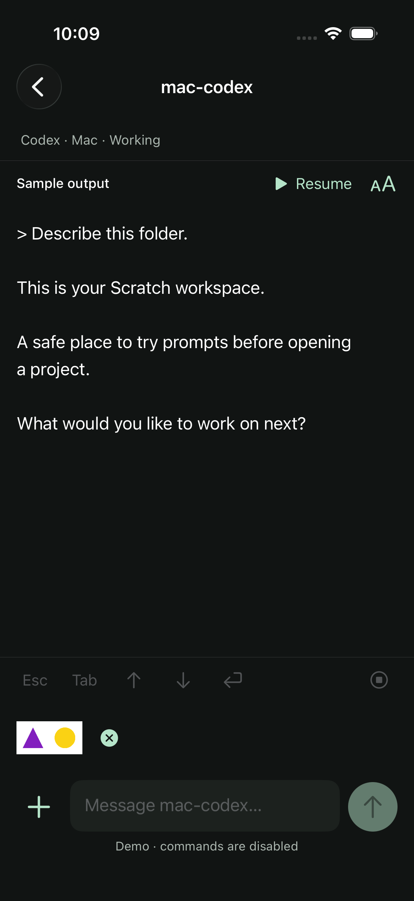
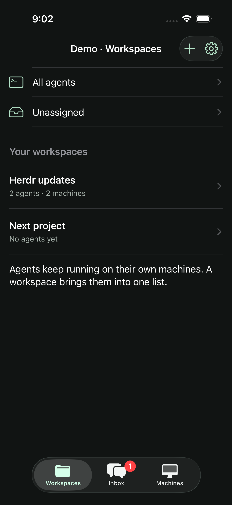
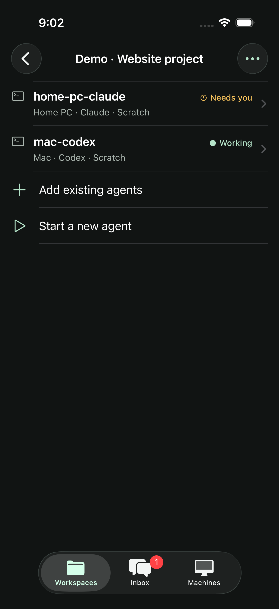
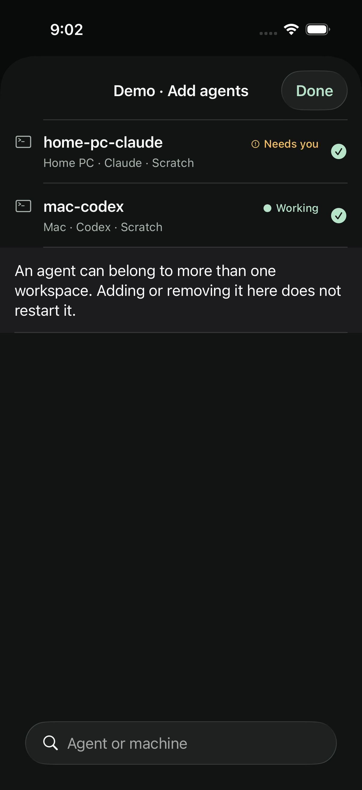
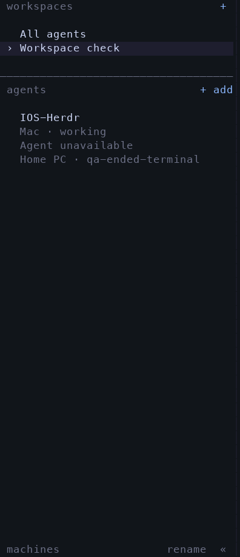
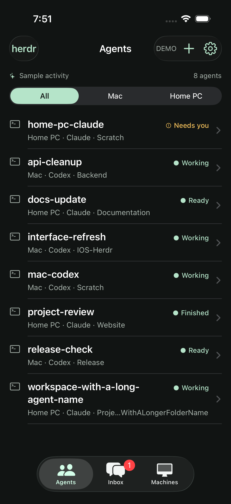
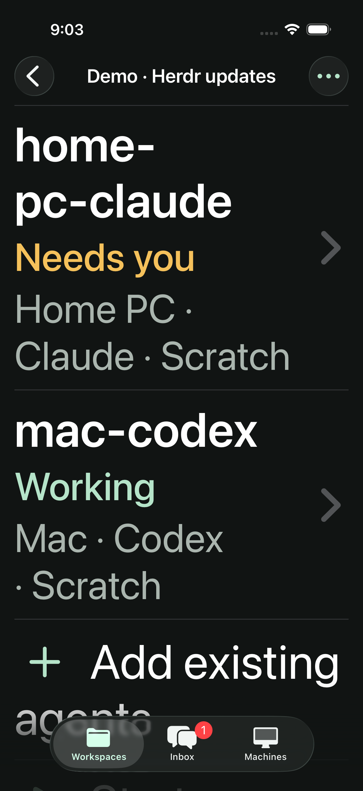

Your workspaces.
Across your machines.
Create a workspace and bring Mac and Home PC agents into one compact list. These are actual iPhone simulator captures with labeled sample activity, plus the desktop terminal sidebar.
Colours and clickable previews · Build 0.1.0 (5) available in TestFlight
Colour, links and clearer output
Read styled terminal output and tap links. Localhost previews open privately through Tailscale.

Read and send photos
Larger text, pause/resume, and photo previews. Images reach the selected agent’s computer.

Your workspaces
Named groups, All agents and Unassigned.

Mac and Home PC together
Compact agent rows retain their machine and provider context.

Choose your agents
Add an agent to one or more workspaces without restarting it.

Desktop Herdr
Captured QA workspace with live Mac and Home PC agents. The Windows terminal was opened and verified; terminal contents are omitted.

The compact agent list
The full agent list remains one tap away.

Larger text
Native accessibility text wraps while the Demo title stays visible.
